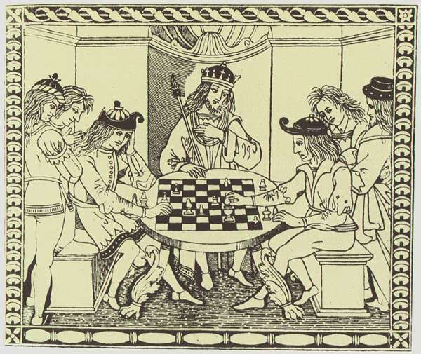
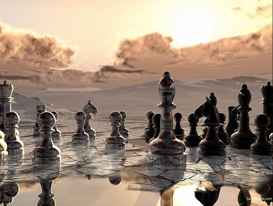

Chess
Glimpse!

Chess is a two-player strategy board game played on a checkered board with 64 squares arranged in an 8×8 grid.
The game is played by millions of people worldwide. Chess is believed to be derived from the
Indian game chaturanga sometime before the 7th century.
Play involves no hidden information.
Each player begins with 16 pieces:- one king
- one queen
- two rooks
- two
knights
- two bishops
and - eight pawns
Each piece type moves differently, with the most powerful being the queen and the least powerful the
pawn. The objective is to checkmate the opponent's king by placing it under an inescapable threat of capture.
To this end, a player's pieces are used to attack and capture the opponent's pieces, while supporting each other. During
the game, play typically involves exchanging pieces for the opponent's similar pieces, and finding and engineering
opportunities to trade advantageously or to get a better position.
Take a peek!
Rules and techniques
- Development
- Control of the center
- King safety
- Pawn structure
The mighty Chaturanga
- Sanskrit chaturaṅga is a bahuvrihi compound, meaning "having four limbs or parts" and in epic poetry
often meaning "army"
- he name comes from a battle formation mentioned in the Indian epic Mahabharata, referring to four divisions of an army,
namely elephantry, chariotry, cavalry and infantry.
- An ancient battle formation, akshauhini, is like the setup of chaturanga.
a.k.a. ashtāpada
- An early reference to an ancient Indian board game is sometimes
attributed to Subandhu in his Vasavadatta,
dated between the 5th and 7th centuries AD:
The time of the rains played its game with frogs for pieces [nayadyutair] yellow and green in colour, as if mottled by
lac, leapt up on the black field squares.
The colours are not those of the two camps, but mean that the frogs have two colours, yellow and green.
- Banabhatta's Harsha Charitha (c. AD 625) contains the earliest reference to the name chaturanga:
Under this monarch, only the bees quarrelled to collect the dew; the only feet cut off were those of measurements,
and only from Ashtâpada one could learn how to draw up a chaturanga, there was no cutting-off of the four limbs
of condemned criminals...
- The game was first introduced to the West in Thomas Hyde's De ludis orientalibus libri duo, published in 1694.
Subsequently, translations of Sanskrit accounts of the game were published by Sir William Jones.
- In Arabic, most of the terminology of chess is derived directly from chaturanga:
Modern chess itself is called shatranj in Arabic, and the bishop is called the elephant.
The Tamerlane chess was also introduced in Iran later.

| Representation |
Name |
| ♔ ♚ |
KING |
| ♕ ♛ |
QUEEN |
| ♖ ♜ |
ROOK |
| ♗ ♝ |
BISHOP |
| ♘ ♞ |
KNIGHT |
| ♙ ♟ |
PAWN |
References
History to chess by Murray, H. J. R. (1913)
"Ashtapada" Jean-Louis Cazaux. 2005-07-25.